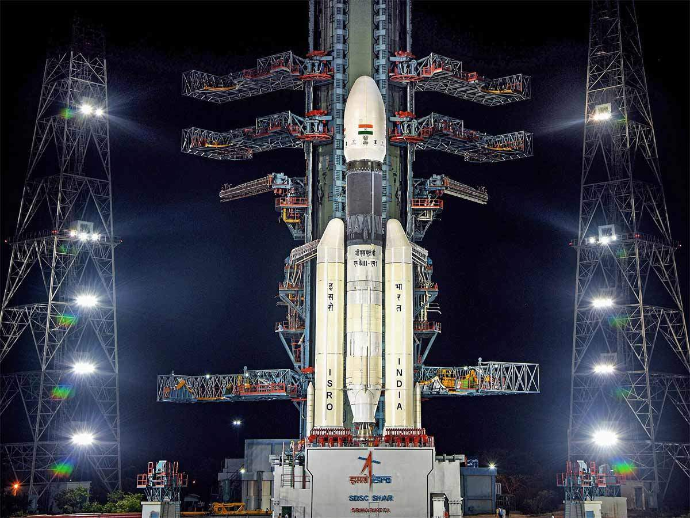
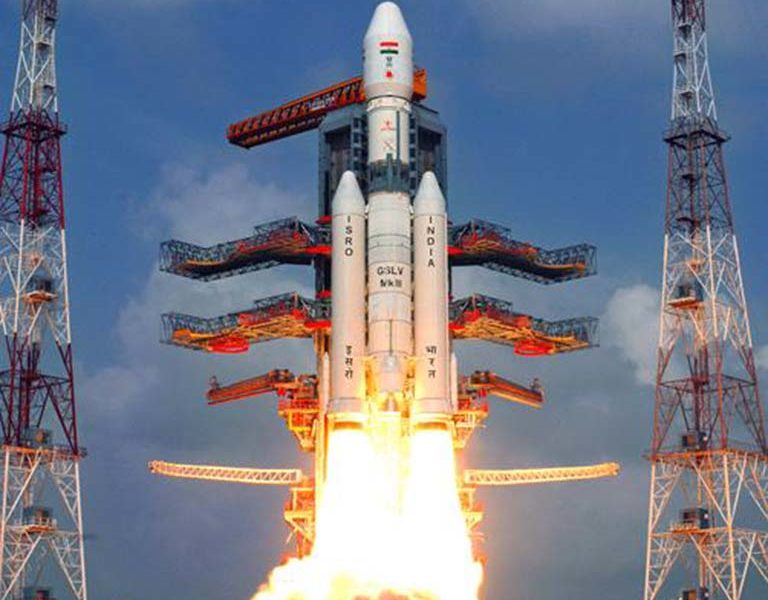
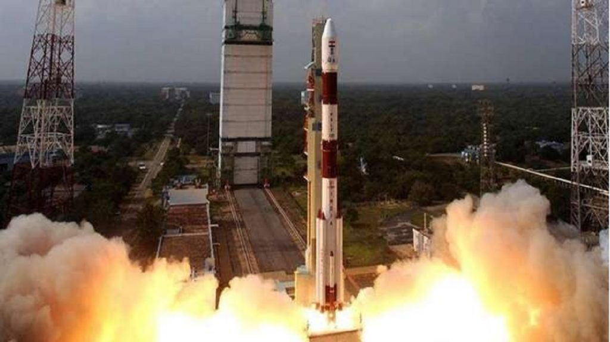
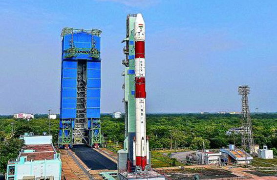

 On July 22, ISRO successfully launched Chandrayaan-2, the country's ambitious second moon mission, from Satish Dhawan Space Center in Sriharikota, Andhra Pradesh. It comprises a fully indigenous orbiter, a lander
named Vikram, and a rover dubbed Pragyan.
Chandrayaan-2 mission is a highly complex mission, which represents a significant technological leap compared to the previous missions of ISRO, which brought together an Orbiter, Lander and Rover
with the goal of exploring south pole of the Moon.
This is a unique mission which aims at studying not just one area of the Moon but all the areas combining the exosphere, the surface as well as the sub-surface of the moon in a single
mission.
More information at: official website
 The Indian space agency, earlier on May 22 this year, scripted history by successfully launching RISAT-2B, a super surveillance satellite, from the Satish Dhawan Space Center.
The radar imaging satellite can
take high-resolution images even in cloudy conditions that can be used for military surveillance to keep an eye on the country's borders as well as for agriculture, forestry, and disaster management support.
Equipped with X-band radar imagers, RISAT-2B monitors the Earth day and night, in any weather conditions. RISAT uses a technique called Synthetic Aperture Radar (SAR) to build images of the Earth below it.
Signals transmitted from the satellite are reflected from the surface and its echo is recorded when it reaches back to the satellite. These signals can then be processed to build a profile of the ground below. The RISAT constellation
is operated by the ISRO. While ISRO states the satellites applications as supporting agriculture, forestry and disaster management, their primary purpose is military surveillance.[1]
More information at: official website
 On December 19 last year, ISRO launched the GSAT-7A, an advanced military communications satellite that is dubbed the "Indian Angry Bird", successfully from Sriharikota. The satellite is meant to boost the communication
capabilities of the defense forces, particularly the Indian Air Force.
Built exclusively for the IAF, the GSAT-7A satellite will enhance the air force's warfare capabilities and also boost its global operations.
More information at: official website
 ISRO successfully launched 31 satellites from the Satish Dhawan Space Center in Sriharikota on November 29, 2018. ISRO's PSLV-C43 lifted off with India's Hyper-Spectral Imaging Satellite (HysIS), the country's best
high-resolution satellite ever, which can study the earth's surface in visible, near-infrared, and shortwave infrared regions of the electromagnetic spectrum.
Along with HysIS, ISRO also launched one micro and 29 nano-satellites from
eight countries.
More information at: official website